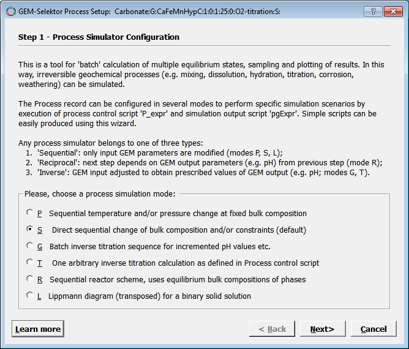
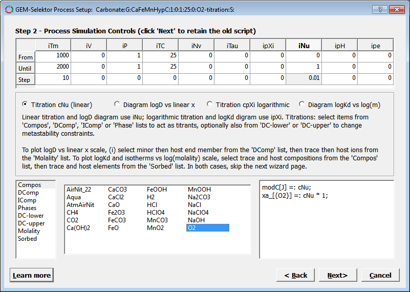
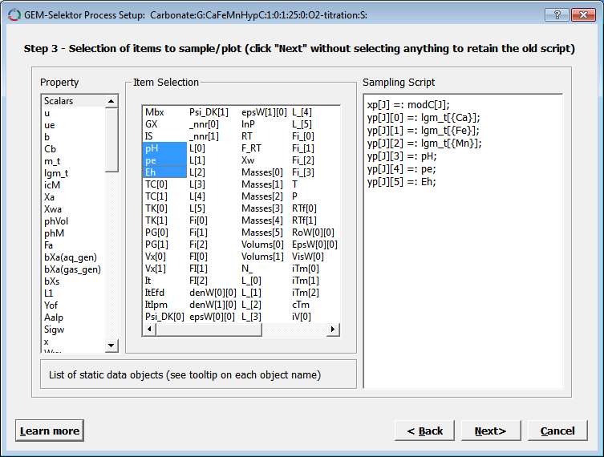

Previous Page Back to Start Page
(23) How
to create
your first Process Simulator.
Switch to the
"Gibbs energy minimization project" dialog and click there on the
"Process Simulation (Process)" button to open the (still empty) Process
window. There, execute the "Record" "Create" menu command. This will
bring you into a "Parent System selection" dialog (shown below).

In the above
dialog, select (as shown) the "parent" system that you just have
prepared before, and double-click on it (or press "Ok") to
proceed. The following small dialog appears now (with asterisks
in the two last fields):
The first
eight fields of the Process record key are identical with that of the
"parent" SysEq
record key. Indeed, the program uses that to immediately load the
"parent" system each time when the Process record is loaded from the
database.
You have to
fill
out the last two fields: "O2-titration" identifies the process
simulator
to be created, and "S" indicates that this will be a simple (straightforward)
change of the bulk composition.
Press "Ok"
when finished. This will get you to a "Process Setup" wizard
dialog:

The wizard
consists of several pages that can be accessed by clicking on the "Next
>" or "< Back" button. Each page contains some explanations
important for setting up the record properly (the explanations may be
changed from version to version).
There is
nothing to change on the first wizard page, so press "Next >" switch
to the second one "Important Dimensions" and change the first
field (nPV Number of steps to be generated) to 51 and the third field
(Number of plots...) to 5, as shown below:

The idea is to collect
calculated values of CaAQ, FeAQ, MnAQ,
-pH and pe at each of 51 simulation points and plot them.
Click "Next >" to
proceed to the third wizard page, which contains some additional
settings (for advanced users). Check that the selections look like
shown below:

Press "Next >" now to see the last wizard page which contains explanations about how the process simulator works. On that page (not shown here), set the number of links to bibliography SDref records to 1; read the explanations, and click "Finish" when ready. A Page 1 of the "Process" window will appear; as usual, fill out the first two comment fields e.g. as shown below.
You can also type in the
third row a reference to your comments or bibliography link ("Example2:2005:comm:"
as shown above).
If you click on that field
later
and press F2, you will see a SDref window where
you
can type your comments (on Page 2) and save the SDref record to
database. When you press (in the Process window page) F2
on the pSDref
field next time, your
comments
will pop up as they have been saved last time; you can change or extend
them and save again,
and so on.
Next, we will finalize and
run the Process Simulator.